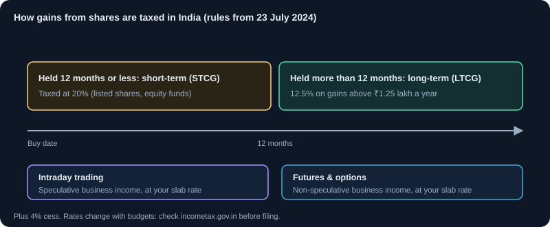

Tax Basics for Indian Investors and Traders
How gains from shares, mutual funds, intraday and F&O are taxed in India, what records to keep, and where to verify the current rules.
1. Why tax matters for every decision
Tax is a cost, and it changes the best choice. A trade that makes ₹10,000 before tax may keep much less after tax and charges. Before you sell, know how the gain will be classified, when it becomes taxable, and what you can offset it against. Tax rules are set by the Income Tax Act and changed through the Union Budget and notifications, so always check the current year's rules.
2. The two big categories: capital gains and business income
Indian tax treats market income in two broad ways. The category depends on how and why you trade, not on the product alone.
- Capital gains: profit or loss from selling a capital asset held as an investment, such as shares or equity mutual funds held for investment. Taxed by holding period.
- Business or professional income: profit from trading as a business activity, such as frequent intraday trading, speculative trading, or F&O. Taxed at your slab rate, with business rules for expenses and losses.
- Your filing, record keeping and loss rules depend on which category applies. If you trade actively, take advice on classification.
3. Holding period: short term or long term (listed shares and equity funds)
For listed equity shares and equity-oriented mutual funds, the holding period decides the category.
- Short-term capital gain (STCG): held for 12 months or less. Verify the current rate; as of Budget 2024, it was 20% on listed equity sold after STT is paid (section 111A).
- Long-term capital gain (LTCG): held for more than 12 months. As of Budget 2024, it was 12.5% on gains above ₹1.25 lakh in a financial year, with no indexation (section 112A).
- Grandfathering: for shares bought before 31 January 2018, the cost can be taken as the fair value on that date, under rules you must verify.
Example (verify rates): you bought 100 shares at ₹500 and sold after 8 months at ₹600, a gain of ₹10,000. This is STCG, taxed at the current short-term rate. If you had held for 14 months, it would be LTCG; the first ₹1.25 lakh of total LTCG in the year would be exempt, and the excess taxed at the current long-term rate.
4. Intraday and F&O: business income, not capital gains
Intraday equity profits are generally treated as speculative business income. F&O profits and losses are generally treated as non-speculative business income. Both are taxed at your slab rate, not at the capital gains rates. This is one of the most common surprises for new traders.
- Intraday equity is speculative business income. Losses can be set off only against speculative income, and carried forward for 4 years.
- F&O is non-speculative business income. Losses can be set off against other business income and carried forward for 8 years, if the return is filed on time.
- Because the category depends on your activity, keep records that show your trading pattern.
5. Turnover and the tax audit
Business income requires proper accounts. Above certain turnover limits, a tax audit by a chartered accountant is required under section 44AB. For derivatives, turnover is defined by specific rules, which are different from the total value of contracts. Check the current definition and thresholds for the year, because a missed audit can attract penalties.
6. Dividends and interest
Dividends from shares and mutual funds are taxable in the hands of the investor at the slab rate. Companies and funds may deduct tax at source (TDS) above a threshold set by law, so check the current limit. Interest from fixed deposits, bonds and debt products is taxed at slab rates, with TDS rules that also apply. Include all income in your return even when TDS has been deducted.
7. Debt funds and other products
The tax on debt mutual funds and some other instruments changed in recent years. Under the rules as understood for this module, gains on debt funds bought after 1 April 2023 are generally taxed at the investor's slab rate, regardless of holding period. Check the current rule for your specific product before buying, because product categories and rules differ.
8. Setting off losses: the rules that matter
- Short-term capital loss can be set off against both short-term and long-term capital gains.
- Long-term capital loss can be set off only against long-term capital gains.
- Capital losses can be carried forward for 8 years, but only if you file your return on time.
- Speculative (intraday equity) losses: only against speculative income, carried forward for 4 years.
- Non-speculative business losses (F&O): against business income, carried forward for 8 years, if filed on time.
- Unrealised losses (on positions you still hold) do not reduce tax; only realised losses do.
9. Advance tax and TDS
Tax is generally paid as you earn. If your estimated tax liability for the year exceeds ₹10,000 after TDS, you must pay advance tax in instalments. Interest can apply for shortfalls. Brokers and funds may deduct TDS on certain transactions or dividends; the deducted amount appears in your tax credit statement, and you claim it when you file.
10. Records you must keep
- Contract notes for every trade, from your broker.
- Profit and loss statement and capital gains statement from your broker, which shows realised and unrealised figures.
- Consolidated account statement (CAS) from the depositories and fund houses, showing all holdings and transactions.
- Bank statements showing the flow of money, and details of TDS certificates.
- A trade journal that shows the purpose of each trade, to help classify your activity.
11. Filing: which return form
The form depends on your income type. Investors with only capital gains and salary typically file ITR-2. Traders with business income (intraday, F&O) typically file ITR-3, and the form can change, so check the current instructions on the income tax website before filing. Use a professional if your transactions are numerous, or if any category is unclear.
12. Where to verify the current rules
- incometax.gov.in: the official portal for returns, forms, notifications and FAQs.
- The latest Union Budget and the Finance Act for the year in question.
- SEBI and exchange circulars for market-specific rules on STT and transactions.
- A qualified chartered accountant or tax professional for your situation.
13. A simple tax check before every sale
- How long have I held these shares or units? Is this STCG or LTCG?
- Is this trade investment or business activity? Which category applies?
- Do I have losses to set off, and in which category?
- Will this sale push my total LTCG past the exemption limit this year?
- Do I need to keep any additional record for this trade?
14. Common tax mistakes
- Assuming intraday profit is a capital gain, and using the wrong rate.
- Forgetting that unrealised gains are not taxed until you sell, and that rebalancing sells can create tax.
- Missing the 12-month dividing line and paying higher tax by selling too early.
- Not filing a return in a loss year, which loses the right to carry forward losses.
- Relying on memory instead of the contract notes and broker statements.
- Using an old rate from a previous year.
15. Income-tax regime: new or old?
The new regime is the default. For FY 2025-26 (Budget 2025) there is no income tax up to ₹12 lakh of taxable income because of the Section 87A rebate; for salaried people that means up to ₹12.75 lakh after the ₹75,000 standard deduction. The old regime has higher rates but keeps deductions such as 80C, 80D, HRA and home-loan interest.
- Salaried people can choose the regime every year when filing their return.
- People with business income, which includes F&O and intraday trading, can switch back to the new regime only once.
- The 87A rebate does not cover special-rate income such as short-term capital gains on shares (111A) or long-term gains (112A).
- Use the Income tax calculator on the Calculators page to compare both regimes with your own numbers.
Charts and visuals

Key terms, explained
- STT (Securities Transaction Tax)
- A tax charged by the government on securities transactions, varying by trade type.
- Brokerage
- The fee a broker charges for executing a trade.
- Intraday
- Trades opened and closed within the same trading session. Positions must be squared off before the market closes.
- Swing trading
- Holding trades for days to weeks to capture a price swing.
- Dividend
- A share of profit a company pays to its shareholders, usually per share.
- Compounding
- Returns that earn their own returns over time, so growth accelerates.
- Emergency fund
- Cash or very safe, liquid savings to cover 3 to 6 months of expenses. Keep it separate from investments.
Questions learners ask
Do I pay tax on shares I have not sold?
No. Unrealised gains are not taxed until you sell or transfer the shares. But selling for rebalancing or to book profit does create a taxable event.
Is intraday profit a capital gain?
Generally no. Intraday equity profit is usually treated as speculative business income, taxed at your slab rate. Classification depends on your activity, so check your situation.
Where do I find the numbers for my tax return?
From your broker's profit and loss and capital gains statements, your contract notes, and the consolidated account statement from depositories and fund houses.
Educational content only, not investment advice. Markets carry risk, including loss of capital. Examples are simplified and may exclude charges, taxes and slippage.